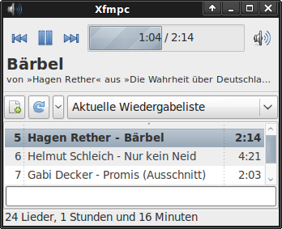

Xfce Music Player Client
Dieser Artikel wurde für die folgenden Ubuntu-Versionen getestet:
Ubuntu 14.04 Trusty Tahr
Zum Verständnis dieses Artikels sind folgende Seiten hilfreich:
Der Xfce Music Player Client  (Xfmpc) ist ein MPD-Client speziell für den Xfce-Desktop. Mit Xfmpc steuert man den Music Player Daemon (MPD), der auf dem selben oder einem anderen Rechner im Netzwerk Musik abspielt. Das schlanke Programm bietet eine kompakte Oberfläche mit den grundlegenden Elementen zur Steuerung des MPD. Einige weitergehende Konfigurationen des MPD, zum Beispiel die Steuerung der Ausgabe-Methoden, sind nicht möglich.
(Xfmpc) ist ein MPD-Client speziell für den Xfce-Desktop. Mit Xfmpc steuert man den Music Player Daemon (MPD), der auf dem selben oder einem anderen Rechner im Netzwerk Musik abspielt. Das schlanke Programm bietet eine kompakte Oberfläche mit den grundlegenden Elementen zur Steuerung des MPD. Einige weitergehende Konfigurationen des MPD, zum Beispiel die Steuerung der Ausgabe-Methoden, sind nicht möglich.
Eine Alternative bietet das Xfce4 Panel Plugin . Diesem fehlt allerdings die Möglichkeit, auf die MPD-Datenbank zuzugreifen und damit die Wiedergabeliste zu bearbeiten. Dafür kann es Ausgabe-Methoden steuern und so ergänzen sich das alleinstehende Programm und das Plugin.
Alleinstehendes Programm¶
In den Versionen nach Xubuntu 12.04 ist das alleinstehende Programm nicht mehr über die offiziellen Paketquellen erhältlich. Dann hilft die Anleitung zum Kompilieren weiter[1].

Konfiguration¶
Das Kontextmenü  versteckt sich hinter dem nebenstehenden Symbol. Hierüber gelangt man zu den "Einstellungen". Hier werden die Verbindungs-Einstellungen für den MPD-Server vorgenommen. Im Reiter "Darstellung" kann die Statuszeile ausgeblendet werden. Zusätzlich kann dort auch das Format der Titelanzeige verändert werden.
versteckt sich hinter dem nebenstehenden Symbol. Hierüber gelangt man zu den "Einstellungen". Hier werden die Verbindungs-Einstellungen für den MPD-Server vorgenommen. Im Reiter "Darstellung" kann die Statuszeile ausgeblendet werden. Zusätzlich kann dort auch das Format der Titelanzeige verändert werden.
Bedienung¶
Zuerst wechselt man in der Menüleiste von "Aktuelle Wiedergabeliste" auf "Datenbank durchsuchen" und wählt zu spielende Titel aus. Anschließend wechselt man zurück zur Wiedergabeliste. Über die Schaltflächen zum Abspielen/Pausieren und zum Vorwärts/Rückwärts Springen kann man nun die Wiedergabeliste benutzen. Über das Kontextmenü können die Funktionen "Wiederholen" und "Zufall" angewählt werden.
In der Zeitanzeige kann man mit der Maus im Titel vor und zurück springen. Über die Eingabe-Zeile im unteren Fenster-Bereich kann man in der Wiedergabelist und der Datenbank suchen. Die Suchergebnisse werden während der Eingabe laufend aktualisiert.
Plugin¶
Allgemeine Informationen zur Einrichtung eines Panel-Plugins sind im Artikel Xfce Panel zu finden.
Installation¶
Folgendes Paket muss installiert werden [1]:
xfce4-mpc-plugin (universe)
 mit apturl
mit apturl
Paketliste zum Kopieren:
sudo apt-get install xfce4-mpc-plugin
sudo aptitude install xfce4-mpc-plugin
Bedienung¶
| Taste | Funktion |
 | Mit der linken Maustaste kann die Wiedergabe gesteuert werden. |
| | Die rechte Maustaste öffnet ein Kontextmenü, über das die Audio-Ausgabe verwaltet werden kann und Funktionen wie Shuffle abrufbar sind. |
 | Die mittlere Maustaste öffnet ein Fenster mit der Wiedergabeliste. |
| | Über das Mausrad lässt sich die Lautstärke steuern. |
 Übersichtsartikel zum Music Player Daemon
Übersichtsartikel zum Music Player Daemon- Erstellt mit Inyoka
-
 2004 – 2017 ubuntuusers.de • Einige Rechte vorbehalten
2004 – 2017 ubuntuusers.de • Einige Rechte vorbehalten
Lizenz • Kontakt • Datenschutz • Impressum • Serverstatus -
Serverhousing gespendet von